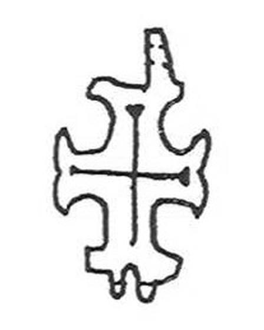

Catalog › CE-0544 · IAH2007-3-6
Valvă inferioară de encolpion miniatural încrustat, Horodîșce (Рис. 3, 6)
sec. XII–XIII (1101–1300) · Horodîșce, regiunea Ternopil, raionul Zboriv, Ucraina
single valve of a reliquary cross; c. XII–XIII (1101–1300); found at Horodîșce, regiunea Ternopil, raionul Zboriv, Ucraina.


Identificare
- Categorie
- Valvă izolată
- Tehnică
- Încrustație
- Dimensiuni
- Î 31 × L 19 mm
Iconografie
- Descriere revers
- Valva inferioară a unui encolpion miniatural, cu brațe inegale și capete în formă de crin; în centrul valvei o cruce cu brațe inegale.
Datare și atribuire
- Datare
- sec. XII–XIII (1101–1300)
Descoperire
- Localitate
- Horodîșce
- Regiune
- regiunea Ternopil, raionul Zboriv
- Țară
- Ucraina
- Context
- Necunoscut
- Coordonate
- 49.6633° N, 25.1425° E
- Precizia locului
- Doar localitatea
Păstrare și referințe
- Bibliografie
- М. Ягодинська, Нові культові речі з давньоруських пам’яток Західного Поділля, în „Матеріали і дослідження з археології Прикарпаття і Волині”, 11, 2007, p. 346–357 [Ягодинська 2007], p. 352, Рис. 3, 6, reprodusă la Рис. 3, 6 (p. 351).
- Figura
- Рис. 3, 6
- Planșe
- Ягодинська 2007, p. 351
- Analogii
- Cruce asemănătoare la Halici (Фіголь 1997, p. 202); datare sec. XII–XIII după Корзухина, Пескова 2003, p. 133.
- Observații
- Dimensiuni 3,1×1,9 cm fără ureche. Fără număr de inventar. În figură sunt desenate două cruci alăturate; este folosită imaginea din stânga. Material: aliaj de cupru, fără precizare suplimentară. Coordonate: ale orașului Zboriv, centrul raionului (localitatea nu a putut fi localizată), aproximative, nu date în sursă.
Citare: Corpus Encolpiorum, CE-0544, Valvă inferioară de encolpion miniatural încrustat, Horodîșce (Рис. 3, 6), --root/piese/IAH2007-3-6/ (accesat 2026-10-20).